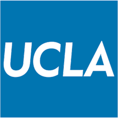

|
I am a Ph.D. candidate at the College of Computing and Data Science (CCDS), Nanyang Technological University, supervised by Prof. Yonggang Wen. Before that, I received my M.S. in Electrical and Computer Engineering from UCLA, advised by Prof. Lei He, and my B.Eng. in Communication Engineering (Science Experimental Class) from Beijing Jiaotong University.
I like collaborating with
Claude Code
and
|
|
Tianwen Zhu, Hao Wang, Yingpeng Du, Lingzhi Su, Yan Xu, Yonggang Wen SIGKDD 2027 Research Track |
|
Tianwen Zhu, Guangyu Wu, Zhiwei Cao, Ruihang Wang, Jimin Jia, Yong Luo, Yonggang Wen AAAI 2026 Main Track (Oral) |
|
Nanyang Technological University (NTU), Singapore
2023 - 2027 (Expected) Ph.D. Candidate, College of Computing and Data Science (CCDS) Advisor: Prof. Yonggang Wen |
|
 |
University of California, Los Angeles (UCLA)
2021 - 2023 M.S. in Electrical and Computer Engineering Advisor: Prof. Lei He |
|
Beijing Jiaotong University (BJTU)
2016 - 2020 B.Eng. in Communication Engineering (Science Experimental Class) |